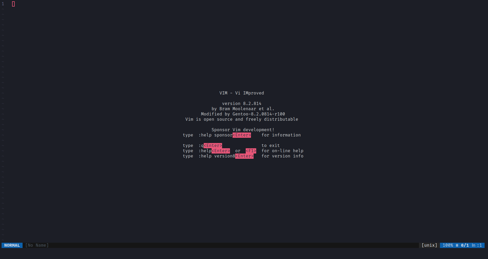

In this post, I will show you 5 arguments proving why Vim is one of the best text editors in my opinion.
When you open Vim for the first time, this is what you get:
When you type :help, you get a big text file, that explains all the things that you need to now to start using Vim
And it is not the only resource: there is also the vimtutor, that has a more beginner-friendly approach. To find it, just open your favourite shell and type vimtutor
Vim does not come with a dozen features with a limited usefulness, like a mail client or a web browser. A text editor is meant to edit text, not to send mails or to browse the World Wide Web.
Speaking of binary size now (it is a bit representative of embedded features, even if it is really language dependent), Vim is only 2.9MB large, where Emacs is 5.4MB and Visual Studio Code is 120MB large.
Without any loss of features (unlike Emacs, where the menu bar is broken), you can launch it in any terminal, in any shell.. It means that you can launch Vim everywhere. You are setting up a new server ? No problems, you just launch Vim. Try launching VSCodium or Sublime Text on a GNU/Linux server.
It has ergonomic keybindings, even for a simple thing like moving around. In vim, keybindings are on the home-row, the middle line of the keyboard (asdfghjkl; on a standard QWERTY keyboard), that allows a fast and simple typing: you do not need to make large hand moves to just move up.
In Vim, to move around, you'll use h to move up, j to move down, h to go left and l to go right.
If you noticed, those keys are aligned on the left part of the homerow. You won't find such ergonomic keybindings on Emacs for example: You have to type C-p to move up, C-n to move down, C-b to move left and C-f to go forward (C means the Control key). It implies large hand movements that aren't pleasant to do.
Unlike Visual Studio Cod{e}{ium}, that can only install extensions from a specific repo, Vim can install plugins from anywhere, from GitHub, GitLab, a private Git repository or even a .tar.gz file. And you can install the way you want, you just have to link the directory where the plugin is installed to Vim.
{kind=link}